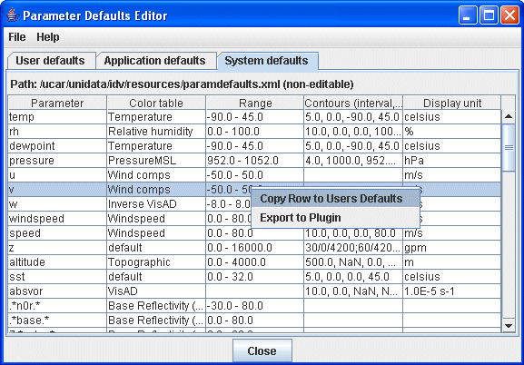
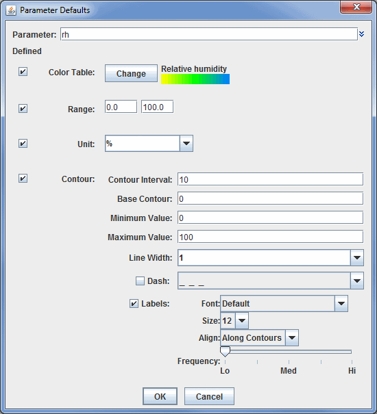

Parameter Defaults Editor
The Parameter Defaults Editor is opened through the Tools
menu in the Main Display window with Tools->Parameters->Defaults and
allows for the specification of default color tables, ranges, units, and
contouring values for different parameters:

Image 1: Parameter Defaults Editor
Properties
- Parameter - Represents the name of the parameter. The double down arrows allow you to change the parameter to one of a loaded data source, or a predefined alias. The parameter name is included with data that is loaded into McIDAS-V. This field can also be the Name defined in the Formula Editor.
- Color Table - Sets the color table to be used to display the parameter.
- Range - Sets the range that the color bar will cover, from low to high.
- Contours - Sets the spacing (difference in value) between contours.
- Display Unit - Sets the unit used to display the parameter.
This feature lets you preset conventional color and contouring choices, and lets
you override system defaults.
There are three sets of defaults: User defaults, Application defaults, and System defaults. While the items in the Application defaults and System defaults tabs cannot be modified within the tab, you can create a duplicate of the same parameter in the User defaults tab. If the same parameter is defined as a User default and an Application/System default, the User default will be used first. If you wish to modify an existing default, you can right-click on the item and select Copy Row to Users Defaults. When you do this
the Parameter Defaults window allows you to select what properties
you want to modify and define:

Image 2: Parameter Defaults Properties
In the example above, any time a parameter named "rh" is used to define a field, the data will display with the Relative Humidity color bar, a range of 0-100, and contour values as specified in the window. If you wish to define an individual item, such as Range, make sure the Defined checkbox is selected. If it is not checked, then any values stored in this window will not be saved as a default. From the User defaults tab, you can also right-click
on a row to add a new row, edit the settings for the row, delete the row, or export an individual row as a plugin.
The parameter names are given in regular expression syntax to help match with
actual data names. Plain text is matched exactly. The string dot star, ".*",
means "any text here." The ^ means "begin with the following text exactly".
Properties
- Parameter - Represents the name of the parameter. The double down arrows allow you to change the parameter to one of a loaded data source, or a predefined alias.
- Color Table - Sets the color table to use to display your parameter. You can change this by clicking the Change button, and selecting a pre-defined color bar.
- Range - Sets the range that the color bar will cover, from low to high.
- Unit - Sets the unit used to display the parameter.
- Contour Interval - Sets the spacing (difference in value) between contours. There are four ways to specify the contour interval.
- 1. Specify a single value to denote a regular interval between contours.
- 2. Specify irregular contour intervals with a semi-colon separated list of values. For example:
- 5400;5460;5800. This would only show contours at 5400, 5460, and 5800.
- 3. Specify different contour intervals for different ranges in the following format:
- cint1/min1/max1;cint2/min2/max2;...;cintn/minn/maxn
- For example, with geopotential heights: 30/0/4200;60/4200/8600;120/8600/24000
would draw contours at 30gpm between 0 and 4200, 60gpm between 4200 and 8600, and 120gpm between 8600 and 24000
- 4. Specify one individual contour by setting the interval, min, and max as the same value. For example:
- 5400/5400/5400. This would only show the 5400 line.
- Base Contour - Sets the value on which all contours are based. All contours will be integer multiples of the contour interval from the base value. For example, with a base value of 0 and a contour interval of 3 contours would be created at ... -6, -3, 0, 3, 6... A base of 1 with that interval would create contours at ... -5, -2, 1, 4, 7... The base value does not have to be the lowest contour level on a plot, or inside the range of values plotted; it is only a computational reference point. The base contour value is also used for controlling which lines are dashed.
- Minimum Value - Sets the limit below which no contour lines are shown. The minimum value may be larger than the base value, so that the base value may never appear on a plot.
- Maximum Value - Sets the upper limit above which no contour lines are shown. The minimum and maximum values do not need to match contour line values; they are only limits.
- Line Width - Sets the line width (in pixels) of the contour lines and labels.
- Dash - Dashes contour values less than the base value. If the base is set higher than maximum value, then all lines are dashed. Use the pulldown menu to select the dash pattern to use.
- Labels - Displays contour labels on the image.
- Labels: Font - Sets the font style of the contour labels.
- Labels: Size - Sets the font size of the contour labels.
- Labels: Align - Sets the way contour labels will be written on the contours. Along Contours means the labels will be written along contours, and while they will not be written upside down, there is a chance they will be written at an angle depending on the layout of the contours. Horizontal means the contour labels will be written on the contour, but it will be written in the horizontal and not on an angle.
- Frequency - Sets the frequency of labels along the contour lines. There will be more labels displayed as the slider is moved from left to right.
- Label Every Nth Line - Determines how many contour lines will be labeled in the display. By default this is set to a value of 2, which means that every other contour line will be labeled. Decrease this value to increase the number of contours with labels, and increase this number to decrease the number of contours with labels.
Menus
The File menu has these unique items:
- New Row - Opens a Parameter Defaults window, which allows you to select what properties
you want to define.
- Open - Allows you to open an eXtensible Markup Language (XML) file (*.xml).
- Import - Allows you to import an eXtensible Markup Language (XML) file (*.xml).
- Export to File - Allows you to save your Parameter as an eXtensible Markup Language (XML) file (*.xml).
- Export to Plugin - Opens the Plugin Creator window with all of your aliases loaded in.
- Export Selected to Plugin - Opens the Plugin Creator window with your selected aliases loaded in.
- Close - Closes the Parameter Defaults Editor window.